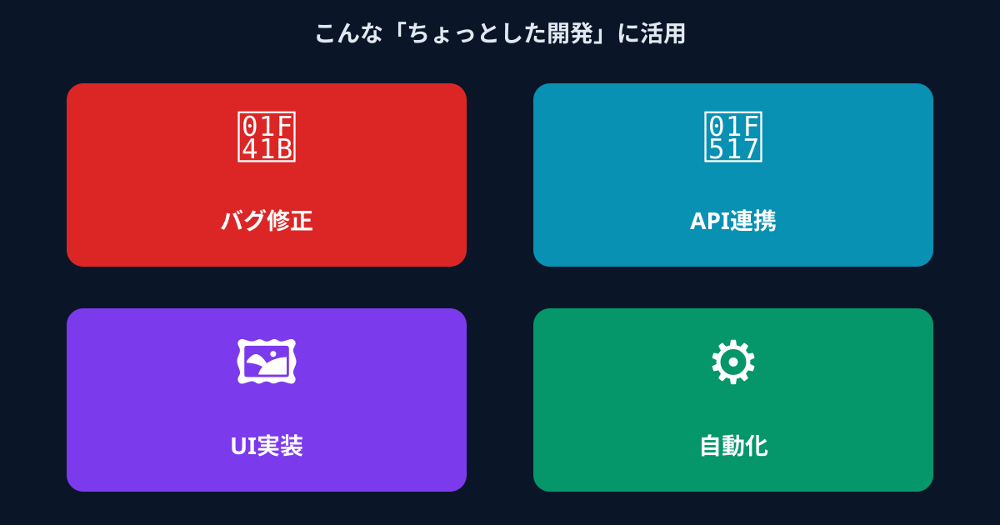

「ちょっとした開発」をすぐに依頼したい方は、まず無料相談から。
無料で案件を相談する →その「ちょっとした開発」、どこに頼めばいいか分からず止まっていませんか？
経営者やWebディレクターであれば、一度は経験したことがあるはずです。「0から大規模なシステムを作りたいわけではない。でも自社にエンジニアを抱えるわけにもいかない。このくらいの規模の開発を、どこに頼むのが正解なんだろう」——そんな迷いが、気づかないうちに小さなタスクを何か月も宙ぶらりんにしてしまっているケースは、スタートアップや中小企業では珍しくありません。
具体的な「ちょっとした開発」といえば、WordPressのカスタマイズ、既存システムへのAPI連携追加、社内で使うExcel自動化スクリプト、LPの機能追加——どれも「エンジニアに1〜3日もあれば終わる」レベルのタスクです。ところが、こうした小さなニーズを適切に処理できる外注先が見当たらず、結果として後回しにされることが非常に多いのです。
- 在庫管理システムとECサイトをAPI連携させたい（1週間以内に対応したかった）
- お問い合わせフォームのバリデーション強化と自動返信メールの追加
- 毎週のデータ集計作業をPythonで自動化したい
- 社内の特定イベントをトリガーにSlackへ通知を飛ばす仕組みを作りたい
こうしたタスクを「誰かに頼もう」と思いながらも、適切な依頼先が見つからずに放置してしまうと、チームの作業効率は下がり続け、機会損失が積み重なっていきます。では、なぜ「ちょっとした開発」の依頼はこれほど難しいのでしょうか。次のセクションで3つの壁を整理します。
「ちょっとした開発」を外注する際によくある3つの壁
開発リソース不足に直面したとき、多くの経営者やWebディレクターが検討する手段は主に3つです。それぞれに一定のメリットはあるものの、「小規模・スポット・高品質」という3つの条件を同時に満たすのが難しいという共通の限界があります。
① 大手の開発会社はオーバースペックで費用が合わない
品質という観点では大手受託開発会社が安心ではあります。しかし現実には、最低発注金額・プロジェクト管理費・ドキュメント作成費などが積み重なり、数時間で終わるようなタスクでも数十万円規模の見積もりが届くことが珍しくありません。「1機能の追加なのに、なぜこんなに高いのか」という場面は、多くの発注者が経験しています。
大手受託会社は本来、大きくまとまったプロジェクトを前提に設計されているため、スモールタスクに対しては構造的にオーバースペックになります。稼働開始まで1〜2か月かかることもあり、緊急性の高い依頼には対応しにくいのも難点です。
② クラウドソーシングは品質とコミュニケーションに不安がある
LancersやCrowdWorksに代表されるクラウドソーシングは、コスト面では比較的リーズナブルです。しかし登録者の品質には大きなばらつきがあり、「スキルの見極め」が難しいという問題があります。ポートフォリオを見ただけでは、実際の業務での対応力が測れないのです。
さらに、コミュニケーションのラグも課題になりがちです。発注者と受注者が非同期でやり取りするため、仕様変更や疑問点の確認に時間がかかり、「依頼の管理」が本来の業務より大変になってしまうケースもあります。ビジネスの重要なシステムを任せることへの心理的ハードルも、なかなか下がりません。
③ 知り合いのエンジニアに頼むのは関係性のリスクがある
前職の同僚や友人のエンジニアに「ちょっと手伝ってほしい」と声をかけるのは、信頼という面では一番安心かもしれません。ただし、報酬の設定・品質のすり合わせ・修正範囲の認識違いなど、業務上のトラブルが発生した場合に人間関係を損なうリスクがあります。
相手にとっても「どこまでやればいいか」の線引きが曖昧になりやすく、頼む側も「迷惑じゃないか」という遠慮から本来の要件を伝えきれないことがあります。継続的に頼める保証もなく、組織として安定した調達手段とはなりにくいのが現実です。
つまり、従来の方法はそれぞれ「コスト」「品質」「スピード」のいずれかで妥協せざるを得ない設計になっていたのです。この3つの壁を同時に越えられる手段が、長らく存在しませんでした——それが近年、変わりつつあります。
解決策は「ハイスペックなエンジニアにスポットで依頼する」マイクロ・マッチング

今まで述べてきた3つの壁をすべて解消できる方法として、ANKENが提供する「マイクロ・マッチング」があります。これは、開発リソース不足を抱える企業と、スポットや副業で案件に取り組みたいエンジニアを、タスク単位・短期間という細かい粒度でつなぐマッチングサービスです。
メガベンチャー所属・即戦力エンジニアを単発から依頼できる
ANKENに登録しているエンジニアは、メガベンチャー企業や大手IT企業に本業を持ちながら副業・フリーランスとして活動する即戦力人材が中心です。採用ではなく「タスク単位でのマッチング」なので、スキルが保証されたプロに対してスポットで気軽に依頼できます。
「業務委託契約の形で、必要な時だけプロの力を借りられる」というシンプルな構造です。特に生成AI・LLM活用、モダンなフロントエンド（React・Next.js）、API設計・インテグレーションなど、今まさに求められている最新技術に強いエンジニアが揃っています。クラウドソーシングのように品質が読めない心配がなく、ある程度のスキル保証がある状態でマッチングが始まります。
固定費ゼロ・低単価のタスク単位で発注できる
大手開発会社のような月額固定費や最低発注額が発生しません。「このタスクにいくらかかるか」が事前に明確になるため、予算管理がしやすく、スタートアップや中小企業でも無理なく導入できる費用感です。
「大手外注の数十分の一のコスト感」でプロフェッショナルに依頼できるため、これまで後回しにしてきた小さな開発タスクにも積極的に手を入れられるようになります。スポットで試してみて、相性の良いエンジニアが見つかれば継続して依頼するという進め方も自由です。
面談の手間を最小限に、スピーディーにアサインできる
採用活動のような長期にわたる選考プロセスが不要です。要件を伝えれば最短即日でエンジニアが動き出せる仕組みがあるため、「急いでいるが採用は間に合わない」という状況にも対応できます。
「今週中にこのタスクを終わらせたい」という緊急度の高い依頼にも柔軟に対応できる機動力が、ANKENの大きな差別化ポイントです。従来の外注で当たり前だった「稼働開始まで1〜2か月」という待機時間を大幅に短縮できます。
どんな依頼ができるか、まず確認するだけでもOKです。
無料で相談してみる →こんな「ちょっとした開発」の依頼に活用されています
「具体的にどんな仕事を依頼できるの？」という疑問に答えるために、実際に活用されているシーンをいくつかご紹介します。
在庫管理システムとECサイトをつなぐAPI連携を1週間以内に実装したかったが、開発会社への見積もりは想定の数倍だった。ANKENでフルスタックエンジニアをアサインし、3日で完了。コストも大幅に抑えられた。
毎週行っているデータ集計作業をPythonで自動化したかったが、社内にエンジニアが不在。タスク単位でスポット依頼し、2日で動作するスクリプトを納品。担当者の週3時間分の手作業がゼロになった。
お問い合わせフォームのバリデーション強化と、送信後の自動返信メール機能を追加したかった。週末だけ稼働できるフロントエンドエンジニアを見つけ、土日2日間で実装が完了した。
社内の特定イベントをトリガーにSlackへ通知が飛ぶ仕組みを構築したかった。バックエンドに強いエンジニアが半日で設計から実装まで完成させ、翌日から運用に乗せることができた。
よくある質問
- Q. 小さな開発案件でも外注先は見つかりますか？
- A. 見つかります。マイクロ・マッチングサービスなら、API連携や機能追加など小規模な依頼にも対応できます。
- Q. クラウドソーシングとの違いは何ですか？
- A. 審査済みのメガベンチャー出身エンジニアに直接依頼できる点が違い、品質のばらつきを抑えられます。
- Q. 知人エンジニアに頼むより何が優れていますか？
- A. 契約・稼働管理が仕組み化されているため、知人依頼にありがちな責任範囲の曖昧さを避けられます。
まとめ｜「ちょっと」を気軽に頼める環境が、事業スピードを変える
「ちょっとした開発」の外注先を見つける難しさは、従来の受発注の仕組みがそもそも「大きくまとまったプロジェクト」を前提に設計されていたことに起因します。大手外注はコストが合わず、クラウドソーシングは品質が不安で、知人への依頼は関係性にリスクが伴う——この3つの壁が、小さな開発タスクを長期間放置させる原因になっていました。
しかし「マイクロ・マッチング」という仕組みを使えば、メガベンチャー出身の即戦力エンジニアに、タスク単位・固定費ゼロ・最短即日という条件でスポット依頼できます。「このくらいの規模なら誰に頼むか」という問いに、これまでになかった現実的な答えが生まれました。
「こんな小さい案件でも大丈夫かな…」という不安は不要です。タスクの大小にかかわらず、まずはお気軽にご相談ください。ANKENのエンジニアが、あなたの課題に合わせた最適な動き方をご提案します。
「こんな小さい案件でも大丈夫？」はご安心を。タスク単位・固定費ゼロ・登録無料です。メガベンチャー出身の即戦力エンジニアが、あなたの課題に合わせた最適な動き方をご提案します。
👉 まずは無料で相談してみる登録費用・固定費ゼロ。相談するだけでもOKです。